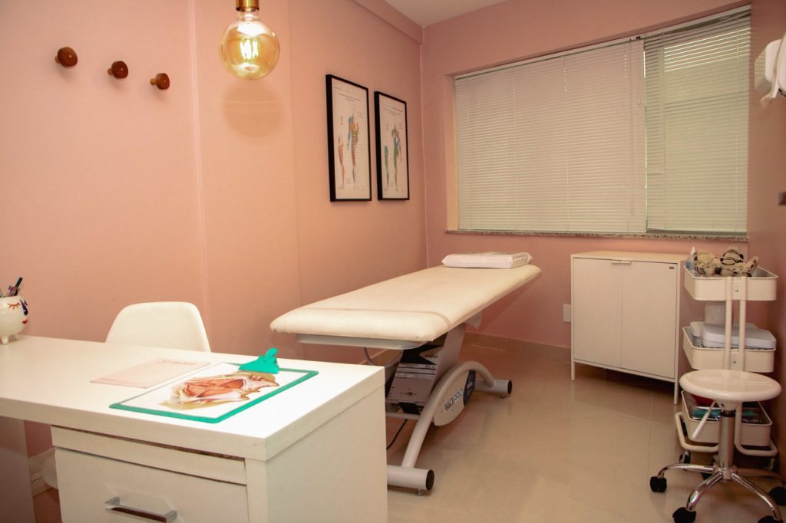
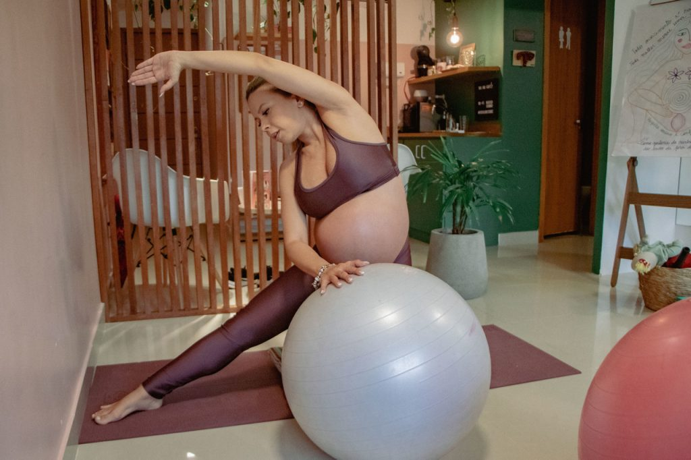
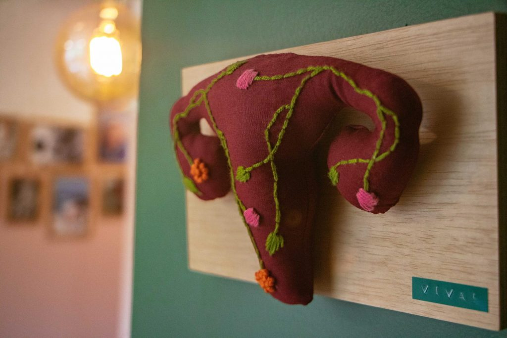
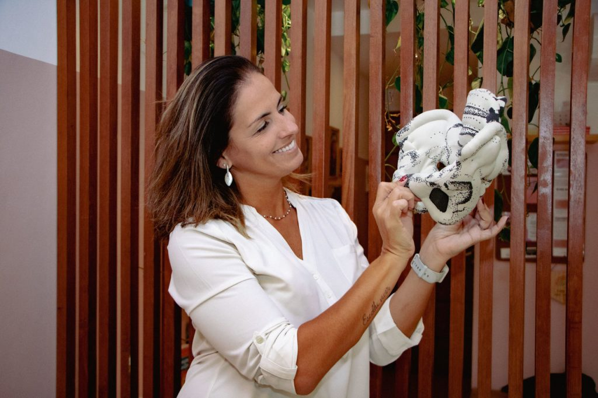

Localizada na Barra da Tijuca/RJ, a Fisio Obstare oferece um espaço especializado em saúde da mulher com foco no assoalho pélvico, movimento e assistência contínua da gestação ao pós-parto.

Oferecemos assistência e cuidado contínuo da gestação ao pós-parto, trazendo resultados positivos neste período tão importante do ciclo feminino.

A gestação traz intensas transformações. A avaliação fisioterapêutica e os exercícios personalizados fortalecem o sistema pélvico, tratam e previnem alterações posturais, desconfortos e dores.
Saiba MaisExercícios guiados de forma personalizada desde o início da gestação para promover flexibilidade, força e preparação segura do corpo.
Recuperação funcional do assoalho pélvico e da musculatura abdominal com segurança para uma transição suave na maternidade.

Suporte contínuo para o parto com técnicas não farmacológicas de alívio da dor, além de oficinas informativas para preparar o casal grávido com máxima segurança e acolhimento.
Consultar Próximas TurmasTratamentos focados no alívio de retenção de líquidos, alívio de tensões, equilíbrio hormonal e bem-estar geral da mulher.
Cuidados complementares através de Florais de Bach e Reiki para apoiar o equilíbrio emocional durante as fases do ciclo feminino.
A Fisio Obstare surgiu da união de três fisioterapeutas com o propósito de acolher e cuidar. Estamos prontas para realizar um atendimento de qualidade e individualizado.
Somos um espaço de fisioterapia especializado em saúde da mulher, em todas as fases do seu ciclo, com foco em assoalho pélvico e movimento, inclusive a obstetrícia.
Toda a alegria, segurança, acolhimento e realização que vivenciamos em nossos processos pessoais nos uniu para fazer da Fisio Obstare um local de apoio e qualidade de vida para as gestantes e mães.
Fale Conosco no WhatsApp
Equipe altamente capacitada para oferecer o melhor atendimento personalizado.
Graduada em fisioterapia desde 2005 pela UFRJ. Com vasta experiência na área de saúde, iniciou sua atuação em Neurologia, Ortopedia e Terapia Intensiva, aplicando rigor técnico e dedicação ao cuidado humanizado da mulher.
Pós-graduada em fisioterapia pélvica desde 2012, Mestre em Ciências da Reabilitação e Acupunturista em Saúde da Mulher. Atua de forma dedicada na área da obstetrícia desde 2015.
Graduada em Fisioterapia desde 2005. Iniciou sua atuação profissional com vasta experiência em hidrocinesioterapia, traumato-ortopedia e neurologia, focando na reabilitação integral e bem-estar feminino.
Identifique sinais do seu corpo. Responda abaixo para entender se uma avaliação pélvica é recomendada para o seu momento atual.
Você apresenta ou já sentiu algum destes desconfortos?
Recomendação de Cuidado:
A presença de qualquer um desses sinais indica a importância de uma avaliação fisioterapêutica individualizada. Um especialista pode avaliar seu caso presencialmente para traçar um plano de exercícios personalizado.
Agendar Avaliação no WhatsAppAvaliações públicas e auditadas registradas por quem vivenciou o acompanhamento com nossa equipe no Google.
"A Natália é simplesmente maravilhosa como pessoa e profissional!!! Sempre dedicada e comprometida, me deixou mto segura e confiante para tentar o parto normal . Já sinto saudade das minhas rotinas na Fisio !"
"Excelente profissional. Ela fez toda a diferença na minha preparação ao parto…sem dúvida foi a melhor escolha!! Gratidão"
"simplesmente maravilhosa! profissional muito competente, atenciosa, espaço acolhedor. com certeza as sessões de exercícios contribuíram pro meu parto ter sido muito rápido."
"Para quem busca profissionalismo, segurança e acolhimento, a Nathalia Moura é a escolha ideal de fisioterapeuta. Desde o primeiro contato até o fim do acompanhamento ela nos encantou com a sua competência, simpatia e cuidado com que trata as pacientes. Recomendo muito!"
"Conheci a Nath através da minha enfermeira obstétrica, e fiz todo meu acompanhamento pré-Natal com ela. Foi uma experiência maravilhosa, tive uma preparação perfeita para meu parto, que pude realizar com confiança e segurança."
"Excelente profissional!"
"Ela é maravilhosa profissionalmente e como pessoa! Foi muito importante e os ensinamentos dela fez toda diferença no meu parto."
"A Nathalia é uma pessoa maravilhosa. O trabalho dela é ótimo e me ajudou muito para o parto e agora no pós -parto também. Super indico!"
"Atenciosa, cuidadosa com cada detalhe, os exercícios que aprendi com a Nathalia faço até hoje e me ajudaram muito no pós parto."
"Excelente fisioterapeuta pélvica! Muito competente, atualizada e atenciosa."
Sua saúde e seu bem-estar merecem um acompanhamento atencioso e especializado na Barra da Tijuca.
Falar Diretamente pelo WhatsApp